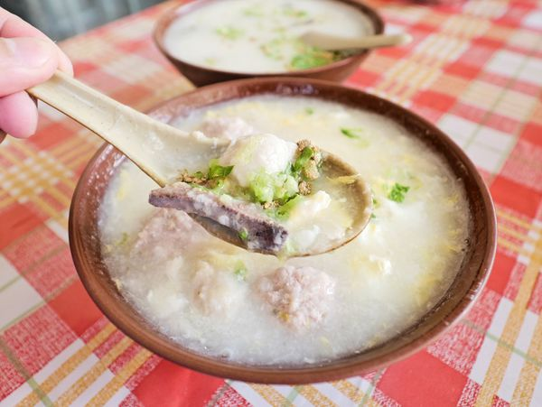

廣東粥
金門美食
蚵仔煎
肉羹麵
蚵仔麵
閱讀心得

廣東粥不只是金門人的早、午餐，演變至今，也成宵夜，的確是深耕在地的飲食文化品牌，現在，來到金門很難不被廣東粥所吸引！
金門廣東粥與台灣本島最大不同的差異，這裡的粥是看不見米粒的「粥糜」、「無米粥」；不過，「無米粥」的說法，絕對不是偷工減料，而是反映過去的金門島上沒有種植水稻，都仰賴外地進口，所以會將取得不易的生米拿來熬成粥糜，才有在地特殊的「無米粥」文化。
再來，廣東粥的由來，其實是下南洋打拼的一些鄉親，衣錦還鄉才把廣東粥吃法帶回，漸漸有人開始加入肉丸、瘦肉、蛋花、炸魚塊和豬肝等食材，時之今日，成為現在到金門旅遊必吃的廣東粥，同時也是當時金門鄉親下南洋的歷史背景縮影！
|